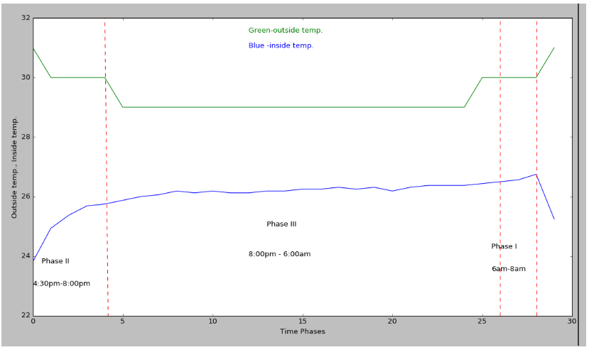
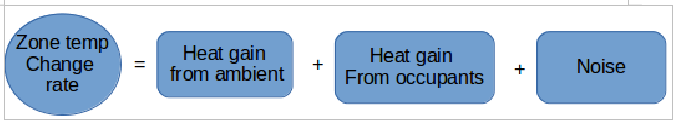

Thermo Cognizance : Predictive thermal modelling for HVAC optimization in commercial buildings.
By: Tarushree Gandhi [Zenatix Pvt. Ltd, Gurgaon, India]
Controlling energy usage and reducing the operating energy costs of commercial buildings is an important problem facing several facility managers. This project aims at optimizing the start and stop time for air-conditioners in order to avoid their usual redundant usage despite achieving favourable inside temperature. I have devised a predictive thermal model for realizing energy and cost savings in commercial buildings. The procedure for optimizing AC start and stop time is threefold:
First, we need to model inside and outside temperature of the building. We formulate a data-driven thermal model in order to model the building thermal dynamics with minimal data requirements. It obtains ambient temperature data from weather websites, zone temperature data and occupancy data (UPS power) from sensors/meters installed in the buildings. According to different inside temperature trends, each day is divided into various phases and the model is applied to each phase.
Second, we utilize the thermal model for predicting zonal inside temperature.
Third, we use the predicted inside temperature values for start time and stop time optimization.
The analysis has been performed over two buildings over the months of March, April, May and June in the year 2016. Different buildings show different behaviour depending on the type of building, location of the building, exposure to sunlight etc.
Inside, Outside temperature vs. Time phases :
{kind=link}
Approaches and Tools used : Linear Regression, K-means Clustering, Cross-validation, Data Normalization, Numpy, Matplotlib, SciPy, Pandas, Scikit-Learn, Jupyter Notebook
Regression Model :
 Result :
Energy cost saved by air-conditioner's start time optimization is ~ INR 18,000.
Energy cost saved by air-conditioner's stop time optimization is ~ INR 10,300.
Total energy saved in four months is 115 kWh.
Total energy cost saved in four months is ~ INR 28,300.